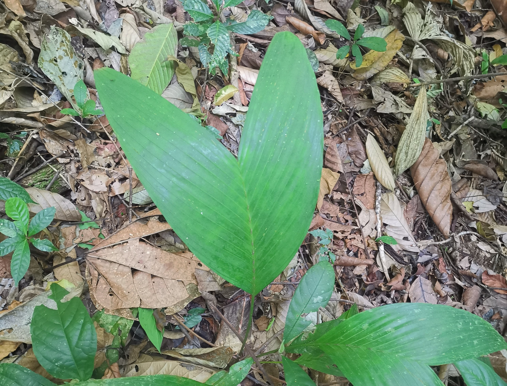

Ulu Gombak Forest Reserve is an ideal location for a Field Studies Centre due to its diverse
habitats and convenient location with easy 
access from Kuala Lumpur and the University. The site includes a stream and streamside flats, open grassland,
bamboo groves, logged forest, and a small extent of unlogged forest, which provides a range of natural and
disturbed habitats from the lowlands to the highlands. Additionally, the proposed centre is in close proximity
to a virgin forest reserve established by the Selangor State Forest Department, which covers over 1100 acres
and extends from the valley floor to the crest of the Selangor-Pahang boundary ridge. The combination of these
two reserves offers unparalleled opportunities for teaching and research programs.
The forest mostly lies on the north bank of the Sungei Gombak, across the stream from the
laboratory and hostel. The recent construction of a permanent bridge across the Gombak gives access
to the forest on the hillside opposite, where paths have been cleared and signposted along both the
South Ridge and the Axial Ridge. The reserve runs northwestward, rising steadily to its apex at 1,600
feet and contains two principal ridges, the South Ridge and the Axial Ridge. Both these paths extend
beyond the area of disturbed or regenerating forest found by the riverside, into the fine dipterocarp
forest characteristic of the natural vegetation at this elevation in Malaya. Hence, the reserve
provides a range of habitats for students to study and conduct research on the lowland fauna and
flora of central Malaya, as well as montane and moss forest habitats on Gunong Bunga Buah.